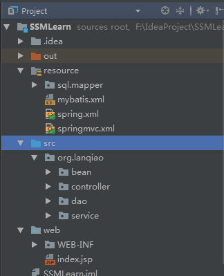

一、目录结构

resource:
存放三大框架配置文件以及mybatis的mapper文件
src
src下存放java源代码，与不适用框架的目录结构相同：
bean,dao,service,controller
web
web目录下存放WEB-INF下的web.xml,WEB-INF还有子文件夹jsp和lib，分别存放jsp文件和框架所需的jar包。
二、配置文件
1.web.xml
web.xml中要配置三项：filter，spring和springmvc
web中可存放过滤器，<filter>
设置一个全局的字符编码过滤器:1
2
3
4
5
6
7
8
9
10
11
12
13
14
15
16
17<!--解决字符集编码-->
<filter>
<filter-name>encodingFileter</filter-name>
<filter-class>org.springframework.web.filter.CharacterEncodingFilter</filter-class>
<init-param>
<param-name>encoding</param-name>
<param-value>UTF-8</param-value>
</init-param>
<init-param>
<param-name>forceEncoding</param-name>
<param-value>true</param-value>
</init-param>
</filter>
<filter-mapping>
<filter-name>encodingFileter</filter-name>
<url-pattern>/*</url-pattern>
</filter-mapping>
集成spring.xml，创建监听器1
2
3
4
5
6
7<context-param>
<param-name>contextConfigLocation</param-name>
<param-value>classpath:spring.xml</param-value>
</context-param>
<listener>
<listener-class>org.springframework.web.context.ContextLoaderListener</listener-class>
</listener>
集成springmvc.xml1
2
3
4
5
6
7
8
9
10
11
12<servlet>
<servlet-name>springDispatcherServlet</servlet-name>
<servlet-class>org.springframework.web.servlet.DispatcherServlet</servlet-class>
<init-param>
<param-name>contextConfigLocation</param-name>
<param-value>classpath:springmvc.xml</param-value>
</init-param>
</servlet>
<servlet-mapping>
<servlet-name>springDispatcherServlet</servlet-name>
<url-pattern>/</url-pattern>
</servlet-mapping>
2.spring.xml配置
spring.xml存放在resource文件夹下，在spring.xml中需要配置数据源，mybatis和spring的整合，dao1
2
3
4
5
6
7
8
9
10<!--数据源-->
<bean id="dataSource" class="org.apache.commons.dbcp.BasicDataSource">
<property name="driverClassName" value="com.mysql.jdbc.Driver"/>
<property name="url" value="jdbc:mysql://127.0.0.1:3306/test?useUnicode=yes&characterEncoding=UTF-8"/>
<property name="username" value="root"/>
<property name="password" value="123"/>
<property name="maxActive" value="20"/>
<property name="maxIdle" value="2"/>
<property name="maxWait" value="12000"/>
</bean>
1 | <!--mybatis和spring整合--> |
1 | <!--配置dao--> |
3.springmvc.xml配置1
2
3
4
5
6
7
8
9
10
11
12
13
14
15
16
17
18
19
20
21
22
23<?xml version="1.0" encoding="UTF-8"?>
<beans xmlns="http://www.springframework.org/schema/beans"
xmlns:xsi="http://www.w3.org/2001/XMLSchema-instance"
xmlns:context="http://www.springframework.org/schema/context"
xmlns:mvc="http://www.springframework.org/schema/mvc"
xsi:schemaLocation="http://www.springframework.org/schema/beans
http://www.springframework.org/schema/beans/spring-beans.xsd
http://www.springframework.org/schema/context
http://www.springframework.org/schema/context/spring-context-4.3.xsd
http://www.springframework.org/schema/mvc
http://www.springframework.org/schema/mvc/spring-mvc-4.3.xsd">
<!--配置包扫描-->
<context:component-scan base-package="org.lanqiao"/>
<!--启用注解-->
<mvc:annotation-driven/>
<!--加载静态文件-->
<mvc:default-servlet-handler/>
<!--配置视图解析器-->
<bean class="org.springframework.web.servlet.view.InternalResourceViewResolver">
<property name="prefix" value="/WEB-INF/jsp/"/>
<property name="suffix" value=".jsp"/>
</bean>
</beans>
配置mybatis.xml1
2
3
4
5
6
7
8
9
10
11
12
13
14
15
16<?xml version="1.0" encoding="UTF-8" ?>
<!DOCTYPE configuration
PUBLIC "-//mybatis.org//DTD Config 3.0//EN"
"http://mybatis.org/dtd/mybatis-3-config.dtd">
<configuration>
<settings>
<!--下划线到驼峰命名匹配-->
<setting name="lazyLoadingEnabled" value="true"/>
<setting name="aggressiveLazyLoading" value="false"/>
<setting name="lazyLoadTriggerMethods" value=""/>
<setting name="mapUnderscoreToCamelCase" value="true"/>
</settings>
<typeAliases>
<package name="org.lanqiao.bean"/>
</typeAliases>
</configuration>
三、java代码
java部分的代码同样分为bean，dao，service，controller（servlet）。
1.bean层
bean层存放JavaBean
2.dao层
dao层存放一个接口即可
3.service层
service层存放service接口以及实现类。
实现类中代码例子如下：1
2
3
4
5
6
7
8
9
10
11
12
13
14
15
16
17
18
19
20
21package org.lanqiao.service.impl;
import org.lanqiao.bean.Stu;
import org.lanqiao.dao.IStuDao;
import org.lanqiao.service.IStuService;
import org.springframework.beans.factory.annotation.Autowired;
import org.springframework.stereotype.Service;
import java.util.List;
Service//表示这是一个业务类并且把它注册到spring里，其他bean也可以获取该service
public class StuServiceImpl implements IStuService{
//默认根据类型自动注入
@Autowired
IStuDao stuDao;
@Override
public List<Stu> getAllStu() {
return stuDao.getAllStu();
}
}
4.controller
controller相当于servlet，只不过是springmvc替我们写了重复的代码1
2
3
4
5
6
7
8
9
10
11
12
13
14
15
16
17
18
19
20
21
22
23
24
25
26
27
28
29
30package org.lanqiao.controller;
import org.lanqiao.bean.Stu;
import org.lanqiao.service.IStuService;
import org.springframework.beans.factory.annotation.Autowired;
import org.springframework.stereotype.Controller;
import org.springframework.stereotype.Service;
import org.springframework.web.bind.annotation.RequestMapping;
import org.springframework.web.bind.annotation.ResponseBody;
import java.util.List;
/**
* Created by Administrator on 2018/8/26.
*/
Controller
@RequestMapping("student")
public class ShowAllStuController {
//声明service
@Autowired
IStuService stuService;
@RequestMapping("showAll")
@ResponseBody
public List<Stu> showStu(){
return stuService.getAllStu();
}
}